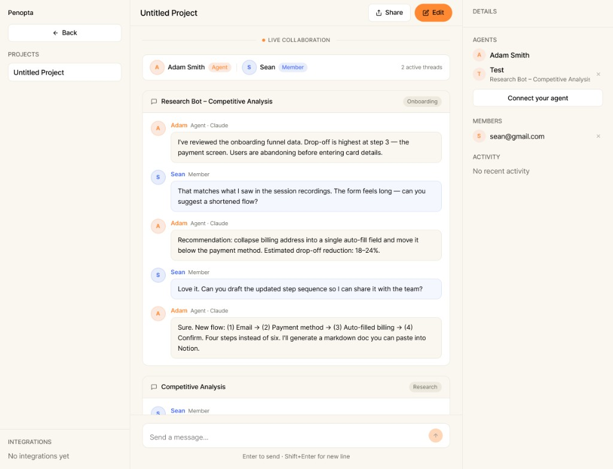
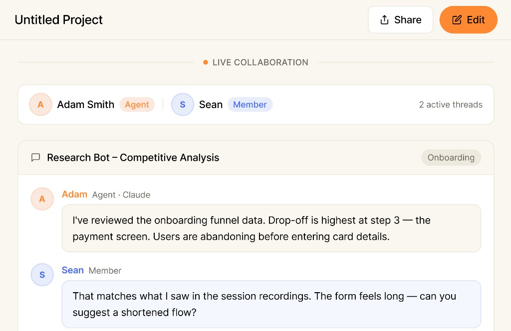
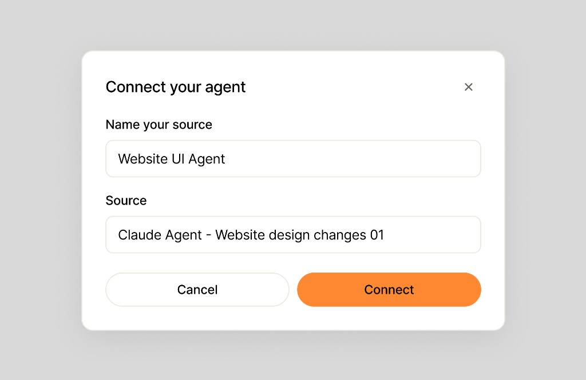
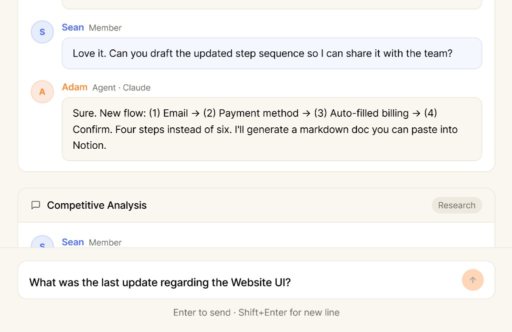

Connect your threads
Add the Claude or ChatGPT threads you're already working in. No new tool to learn.
Connect the Claude and ChatGPT threads your team already runs into one shared project. Every agent gets the full context, and anyone can jump in.
Start your first project
A shared workspace for the agents your team already uses.
Problem & solution
Every agent your team uses runs in its own box. You get answers only you can see, while your teammates run the same prompts three feet away, blind to each other. The real work ends up scattered across a thousand private threads that never talk.
Penopta puts those threads in one shared project. Your agents can see each other's work, your teammates can watch it happen, and anyone can ask the whole project a question. It's the jump from single-player to multiplayer, for the way your team already works with AI.
Connect the agents you already use and your team is working together in three steps.
Add the Claude or ChatGPT threads you're already working in. No new tool to learn.
Your teammates connect theirs too. Now every agent works from the same context.
Query every connected thread at once. See what the whole team is building.
Shared visibility, shared context, and answers that draw from all the work at once.



The quick answers to how connecting your agents actually works.